自分のキャラクターの顔を保ったまま、
フィギュア・浮世絵・たい焼きまで。全30種。
見本は全部、同じキャラクター（ミサキ）で実際に作ったものです。
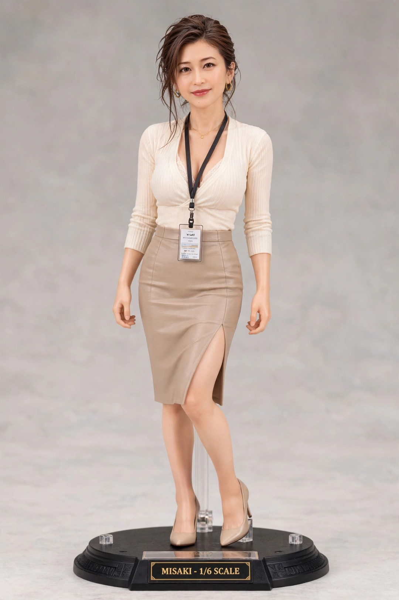
添付のキャラクターを、顔と髪型と形の特徴を保ったまま、次のスタイルに変身させてください。 スタイル：1/6スケールフィギュアのような、台座に立つ精密な立体造形 全身が1人だけ写る画像にしてください。別人化させないでください。 私のキャラクターの固定ポイント：見た目は〔 〕、髪型は〔 〕、服装は〔 〕
添付のキャラクターを、顔と髪型と形の特徴を保ったまま、次のスタイルに変身させてください。 スタイル：机の上に立つ小さなミニチュア人形のような姿 全身が1人だけ写る画像にしてください。別人化させないでください。 私のキャラクターの固定ポイント：見た目は〔 〕、髪型は〔 〕、服装は〔 〕
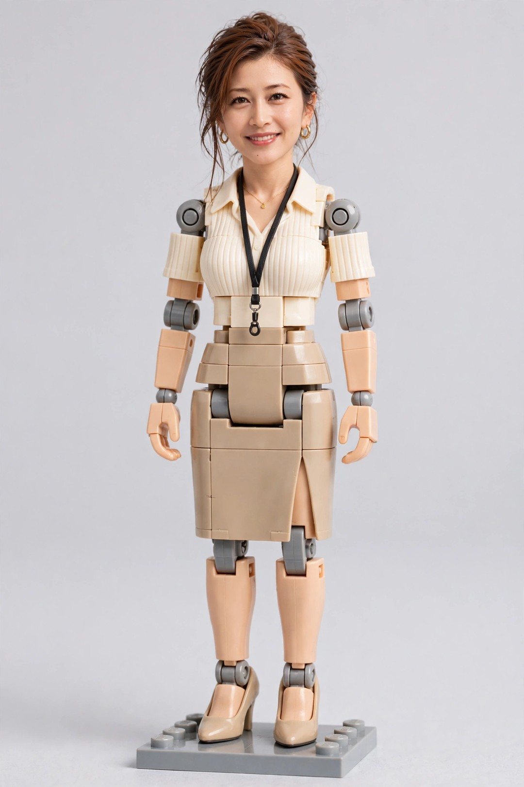
添付のキャラクターを、顔と髪型と形の特徴を保ったまま、次のスタイルに変身させてください。 スタイル：プラスチックのブロックで組み立てた人形のような質感と関節 全身が1人だけ写る画像にしてください。別人化させないでください。 私のキャラクターの固定ポイント：見た目は〔 〕、髪型は〔 〕、服装は〔 〕
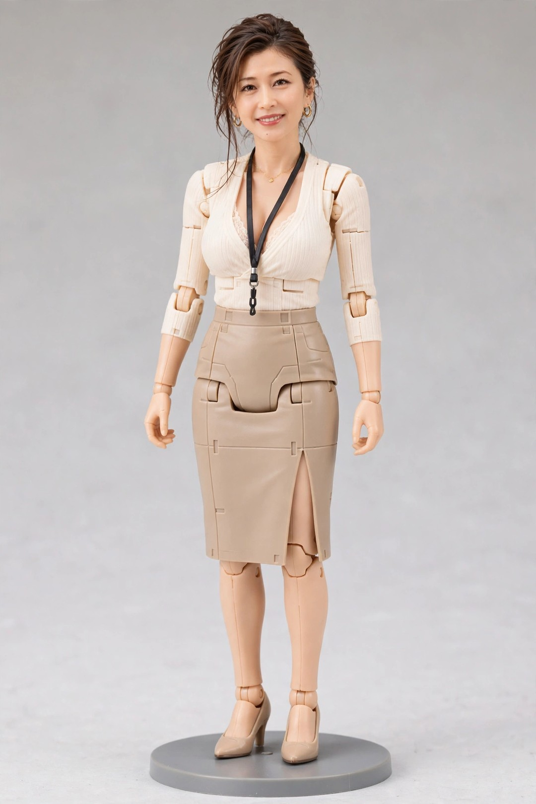
添付のキャラクターを、顔と髪型と形の特徴を保ったまま、次のスタイルに変身させてください。 スタイル：ランナーから切り出したパーツを組み立てた模型のような、成形色と継ぎ目のある質感 全身が1人だけ写る画像にしてください。別人化させないでください。 私のキャラクターの固定ポイント：見た目は〔 〕、髪型は〔 〕、服装は〔 〕
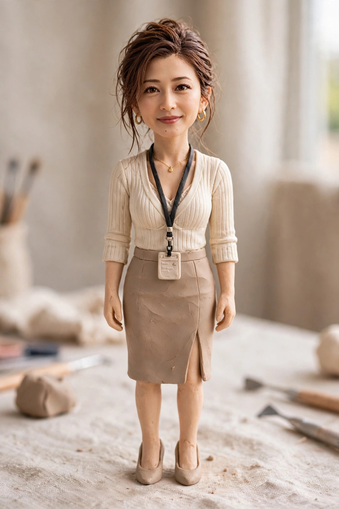
添付のキャラクターを、顔と髪型と形の特徴を保ったまま、次のスタイルに変身させてください。 スタイル：手作りの粘土人形のような、指跡の残る柔らかい質感 全身が1人だけ写る画像にしてください。別人化させないでください。 私のキャラクターの固定ポイント：見た目は〔 〕、髪型は〔 〕、服装は〔 〕
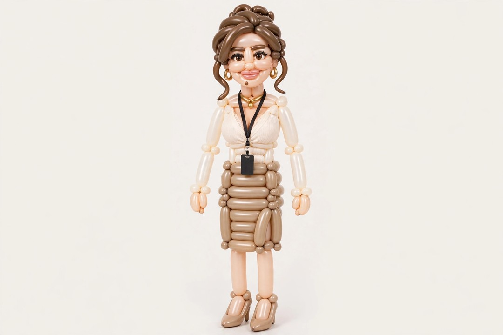
添付のキャラクターを、顔と髪型と形の特徴を保ったまま、次のスタイルに変身させてください。 スタイル：細長い風船をねじって作ったバルーン人形のような、つやのあるゴムの質感と結び目 全身が1人だけ写る画像にしてください。別人化させないでください。 私のキャラクターの固定ポイント：見た目は〔 〕、髪型は〔 〕、服装は〔 〕
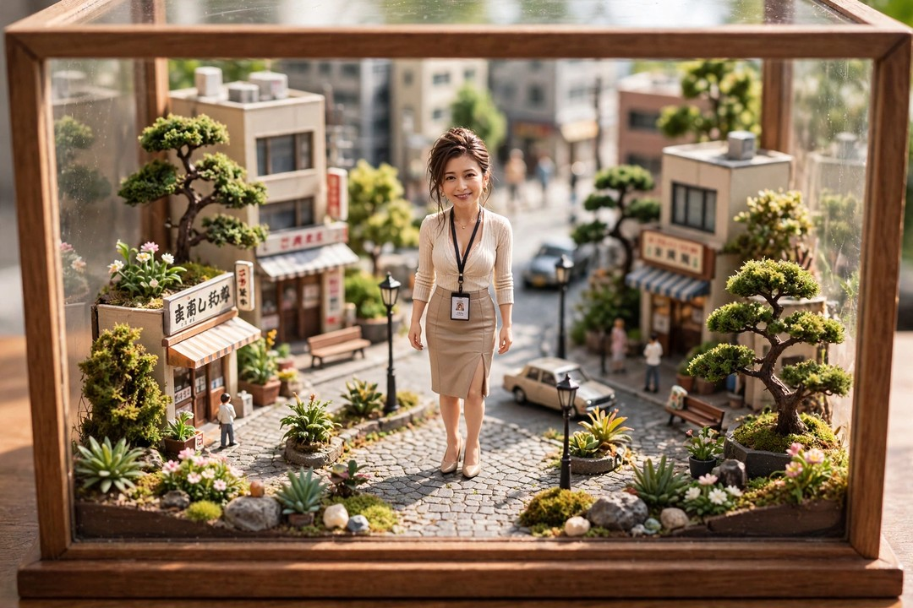
添付のキャラクターを、顔と髪型と形の特徴を保ったまま、次のスタイルに変身させてください。 スタイル：箱庭のジオラマの中に立つミニチュアフィギュア。周りに小さな街並みや植物の模型 全身が1人だけ写る画像にしてください。別人化させないでください。 私のキャラクターの固定ポイント：見た目は〔 〕、髪型は〔 〕、服装は〔 〕
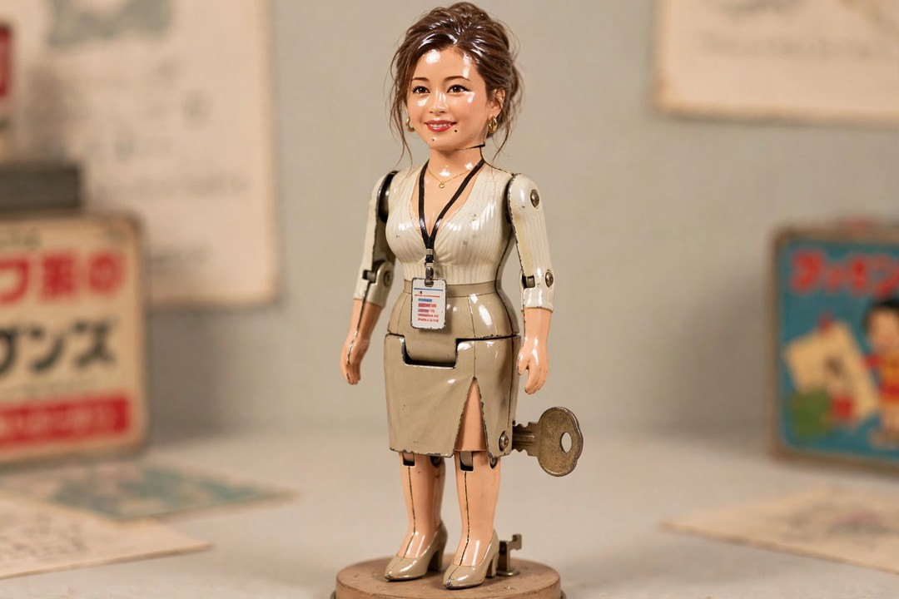
添付のキャラクターを、顔と髪型と形の特徴を保ったまま、次のスタイルに変身させてください。 スタイル：ゼンマイ付きのレトロなブリキ玩具のような質感 全身が1人だけ写る画像にしてください。別人化させないでください。 私のキャラクターの固定ポイント：見た目は〔 〕、髪型は〔 〕、服装は〔 〕
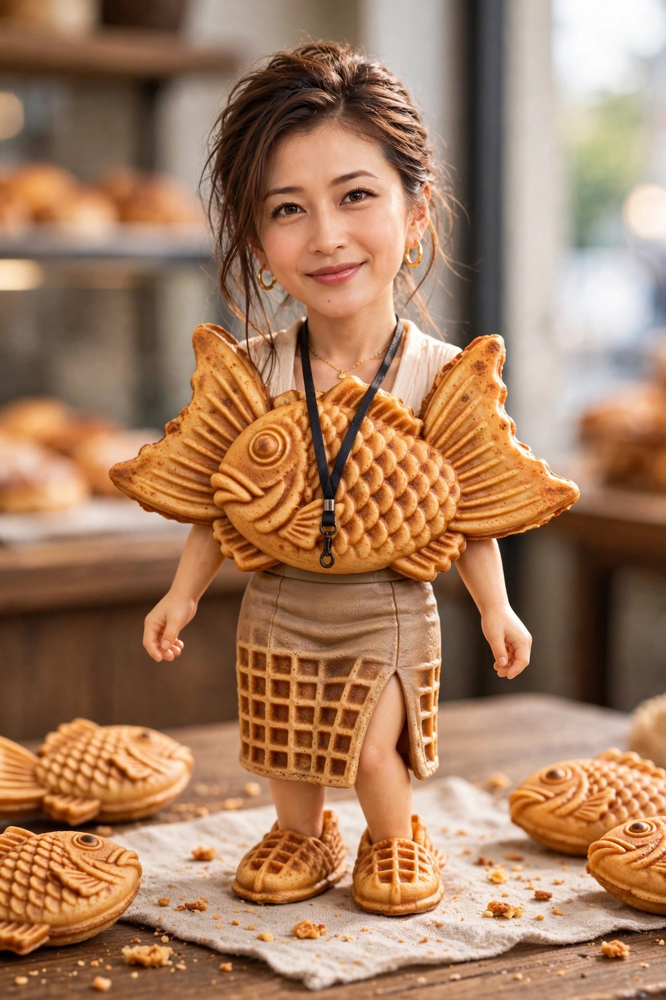
添付のキャラクターを、顔と髪型と形の特徴を保ったまま、次のスタイルに変身させてください。 スタイル：顔はそのまま、体がたい焼きの姿 全身が1人だけ写る画像にしてください。別人化させないでください。 私のキャラクターの固定ポイント：見た目は〔 〕、髪型は〔 〕、服装は〔 〕
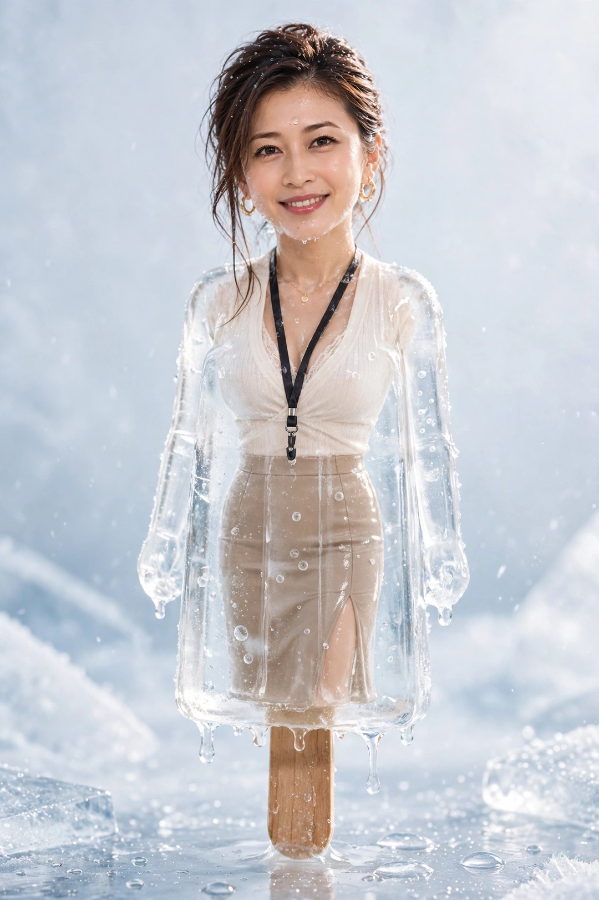
添付のキャラクターを、顔と髪型と形の特徴を保ったまま、次のスタイルに変身させてください。 スタイル：氷のキャンディーの中に全身が入った姿 全身が1人だけ写る画像にしてください。別人化させないでください。 私のキャラクターの固定ポイント：見た目は〔 〕、髪型は〔 〕、服装は〔 〕
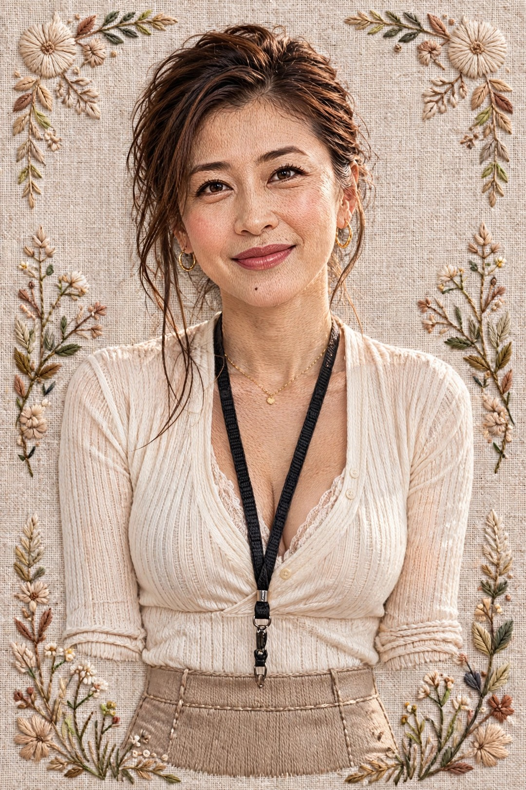
添付のキャラクターを、顔と髪型と形の特徴を保ったまま、次のスタイルに変身させてください。 スタイル：布に刺繍されたような、糸の重なりが見える表現 全身が1人だけ写る画像にしてください。別人化させないでください。 私のキャラクターの固定ポイント：見た目は〔 〕、髪型は〔 〕、服装は〔 〕
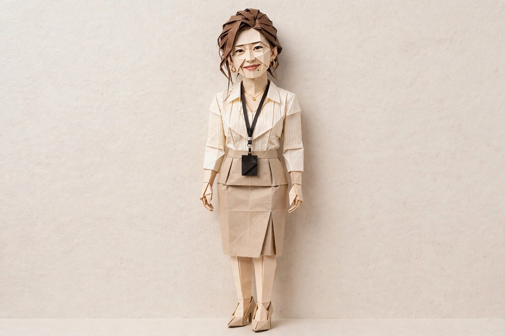
添付のキャラクターを、顔と髪型と形の特徴を保ったまま、次のスタイルに変身させてください。 スタイル：折り目のある紙人形のような姿 全身が1人だけ写る画像にしてください。別人化させないでください。 私のキャラクターの固定ポイント：見た目は〔 〕、髪型は〔 〕、服装は〔 〕
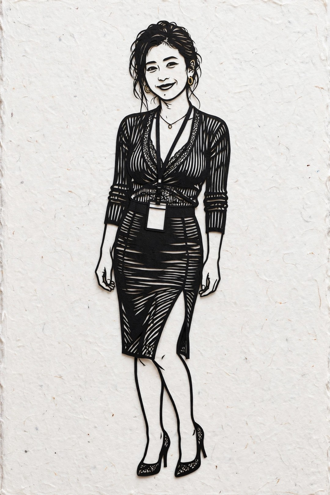
添付のキャラクターを、顔と髪型と形の特徴を保ったまま、次のスタイルに変身させてください。 スタイル：和紙の上に置かれた切り抜きアートのような表現 全身が1人だけ写る画像にしてください。別人化させないでください。 私のキャラクターの固定ポイント：見た目は〔 〕、髪型は〔 〕、服装は〔 〕
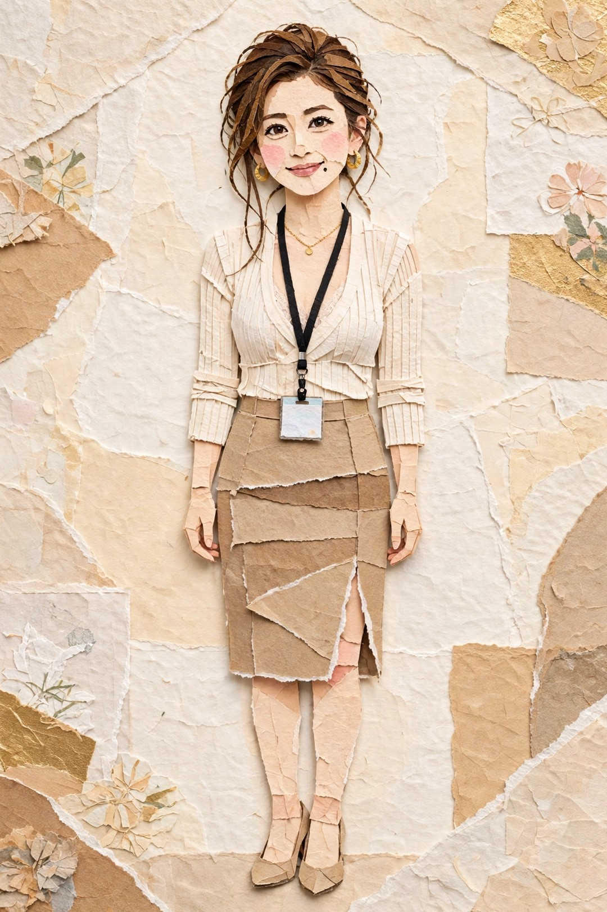
添付のキャラクターを、顔と髪型と形の特徴を保ったまま、次のスタイルに変身させてください。 スタイル：色紙や和紙をちぎって貼り重ねた、紙の繊維と重なりの見える質感 全身が1人だけ写る画像にしてください。別人化させないでください。 私のキャラクターの固定ポイント：見た目は〔 〕、髪型は〔 〕、服装は〔 〕
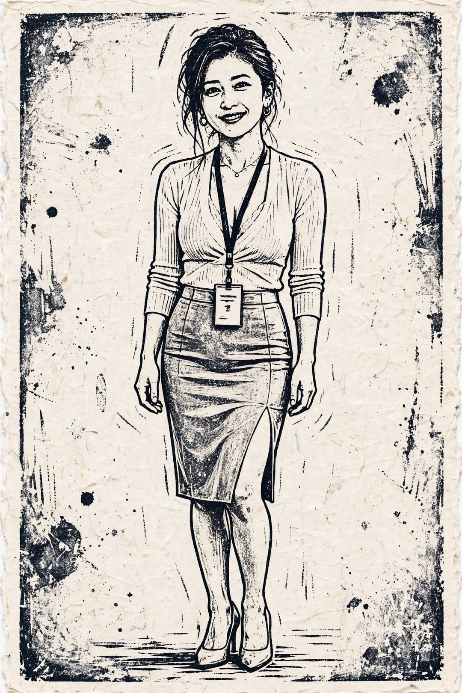
添付のキャラクターを、顔と髪型と形の特徴を保ったまま、次のスタイルに変身させてください。 スタイル：はんこを押した版画のような、単色インクのかすれと彫り跡 全身が1人だけ写る画像にしてください。別人化させないでください。 私のキャラクターの固定ポイント：見た目は〔 〕、髪型は〔 〕、服装は〔 〕
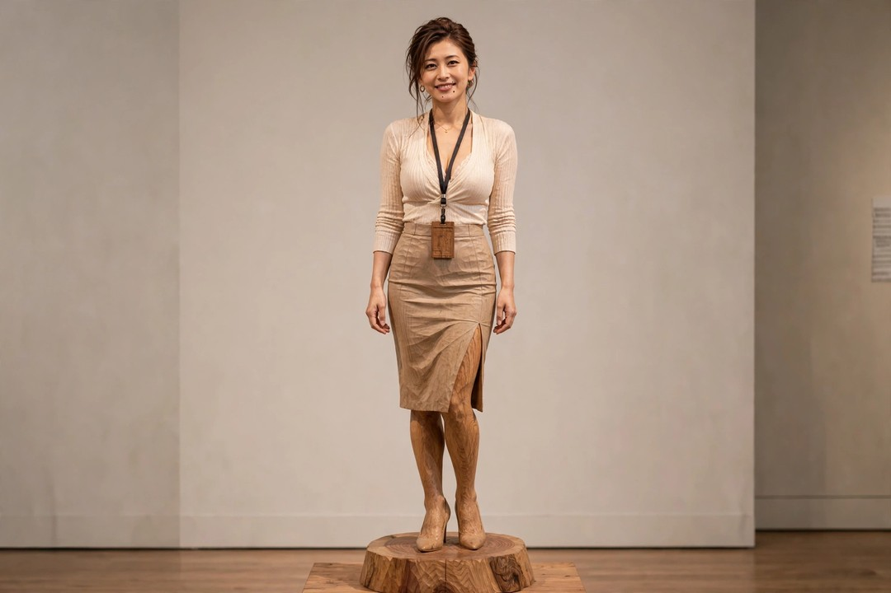
添付のキャラクターを、顔と髪型と形の特徴を保ったまま、次のスタイルに変身させてください。 スタイル：一木から彫り出した木彫りの像のような、木目と彫刻刀の跡 全身が1人だけ写る画像にしてください。別人化させないでください。 私のキャラクターの固定ポイント：見た目は〔 〕、髪型は〔 〕、服装は〔 〕
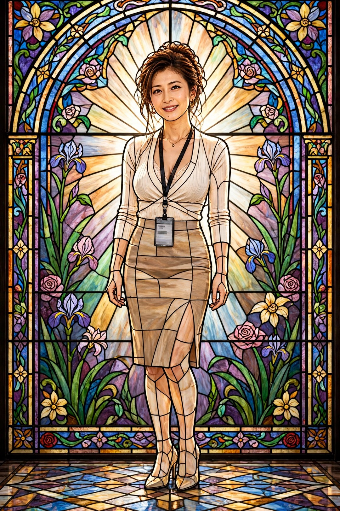
添付のキャラクターを、顔と髪型と形の特徴を保ったまま、次のスタイルに変身させてください。 スタイル：色ガラスを鉛の線でつないだ窓絵のような、光を通す鮮やかな色面 全身が1人だけ写る画像にしてください。別人化させないでください。 私のキャラクターの固定ポイント：見た目は〔 〕、髪型は〔 〕、服装は〔 〕
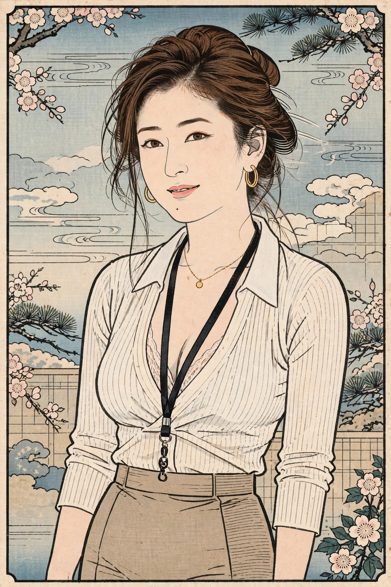
添付のキャラクターを、顔と髪型と形の特徴を保ったまま、次のスタイルに変身させてください。 スタイル：木版画の浮世絵の画風 全身が1人だけ写る画像にしてください。別人化させないでください。 私のキャラクターの固定ポイント：見た目は〔 〕、髪型は〔 〕、服装は〔 〕
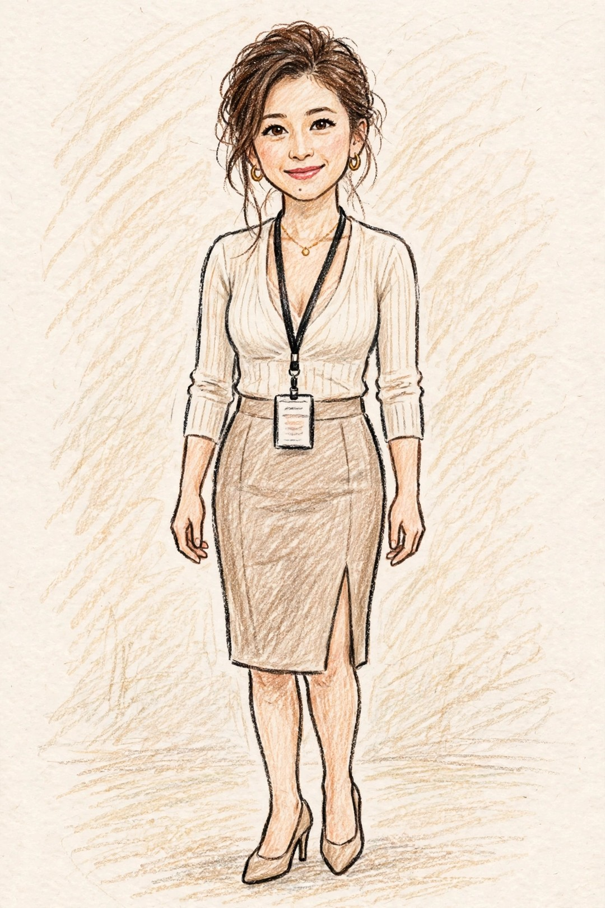
添付のキャラクターを、顔と髪型と形の特徴を保ったまま、次のスタイルに変身させてください。 スタイル：クレヨンで描いたような、ざらっとした質感とにじむ色使い 全身が1人だけ写る画像にしてください。別人化させないでください。 私のキャラクターの固定ポイント：見た目は〔 〕、髪型は〔 〕、服装は〔 〕
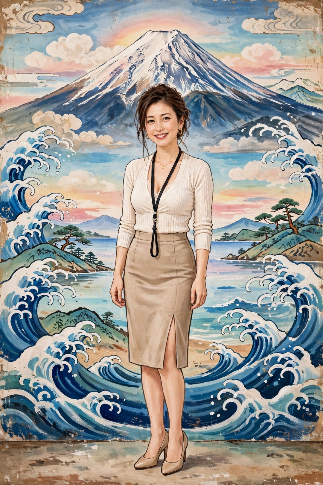
添付のキャラクターを、顔と髪型と形の特徴を保ったまま、次のスタイルに変身させてください。 スタイル：銭湯の壁絵のような、はっきりした色と大らかな筆遣い。背景に富士山と波 全身が1人だけ写る画像にしてください。別人化させないでください。 私のキャラクターの固定ポイント：見た目は〔 〕、髪型は〔 〕、服装は〔 〕
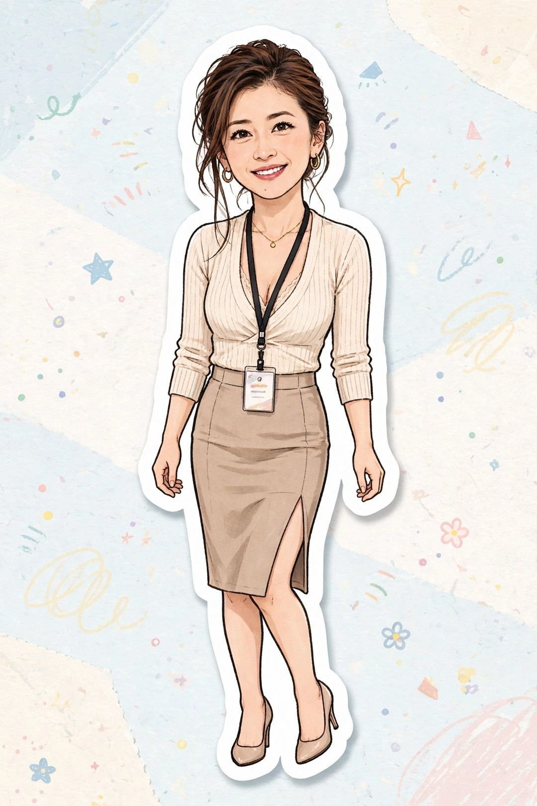
添付のキャラクターを、顔と髪型と形の特徴を保ったまま、次のスタイルに変身させてください。 スタイル：白い太フチのステッカーのような姿 全身が1人だけ写る画像にしてください。別人化させないでください。 私のキャラクターの固定ポイント：見た目は〔 〕、髪型は〔 〕、服装は〔 〕
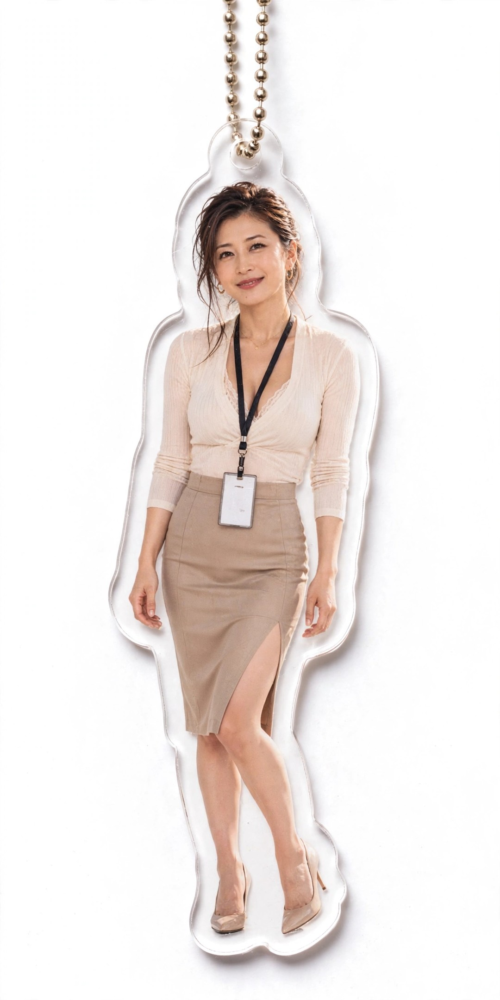
添付のキャラクターを、顔と髪型と形の特徴を保ったまま、次のスタイルに変身させてください。 スタイル：透明アクリル板に印刷されたキーホルダーの実物写真風。上部にボールチェーン 全身が1人だけ写る画像にしてください。別人化させないでください。 私のキャラクターの固定ポイント：見た目は〔 〕、髪型は〔 〕、服装は〔 〕
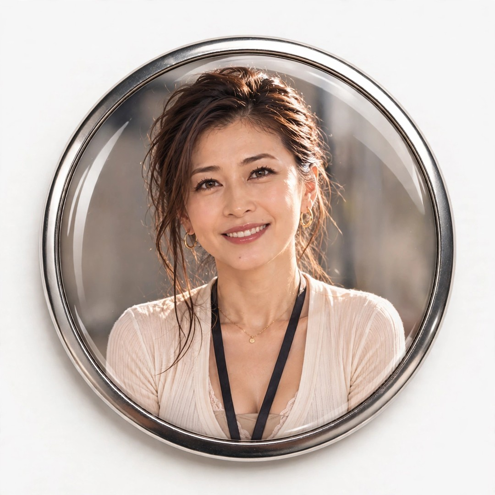
添付のキャラクターを、顔と髪型と形の特徴を保ったまま、次のスタイルに変身させてください。 スタイル：丸い缶バッジに印刷されたデザイン 全身が1人だけ写る画像にしてください。別人化させないでください。 私のキャラクターの固定ポイント：見た目は〔 〕、髪型は〔 〕、服装は〔 〕
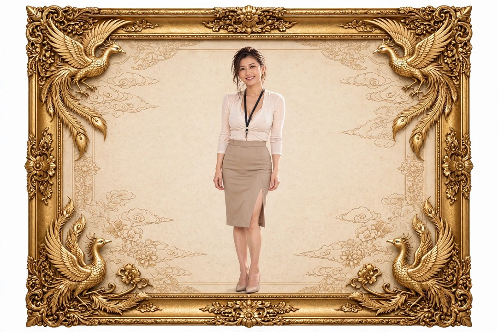
添付のキャラクターを、顔と髪型と形の特徴を保ったまま、次のスタイルに変身させてください。 スタイル：鳳凰模様の金枠がある正式な賞状の中央に、肖像として描かれた姿。文字は入れないでください 全身が1人だけ写る画像にしてください。別人化させないでください。 私のキャラクターの固定ポイント：見た目は〔 〕、髪型は〔 〕、服装は〔 〕
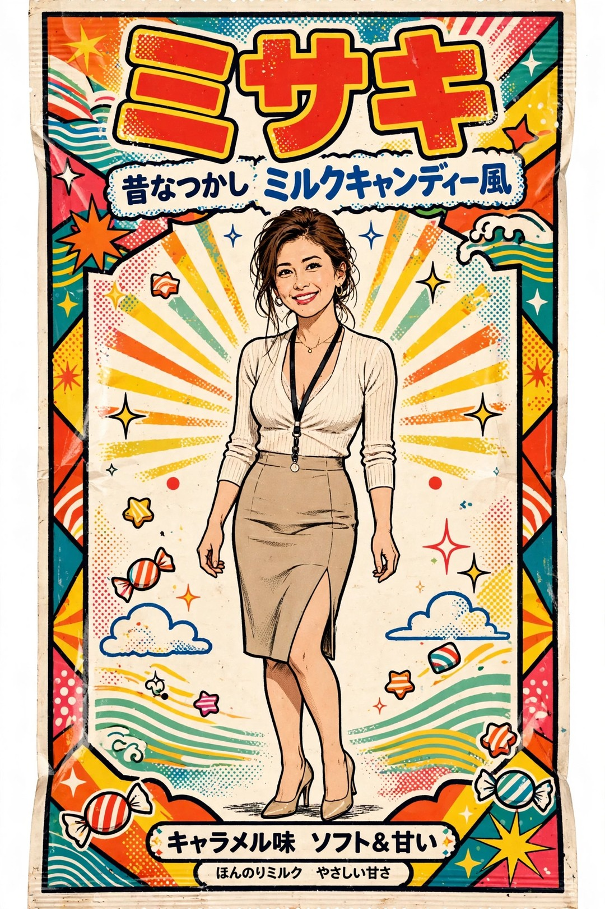
添付のキャラクターを、顔と髪型と形の特徴を保ったまま、次のスタイルに変身させてください。 スタイル：昭和レトロな駄菓子の袋のパッケージイラスト風。実在の商品名・ブランド名は入れないでください 全身が1人だけ写る画像にしてください。別人化させないでください。 私のキャラクターの固定ポイント：見た目は〔 〕、髪型は〔 〕、服装は〔 〕
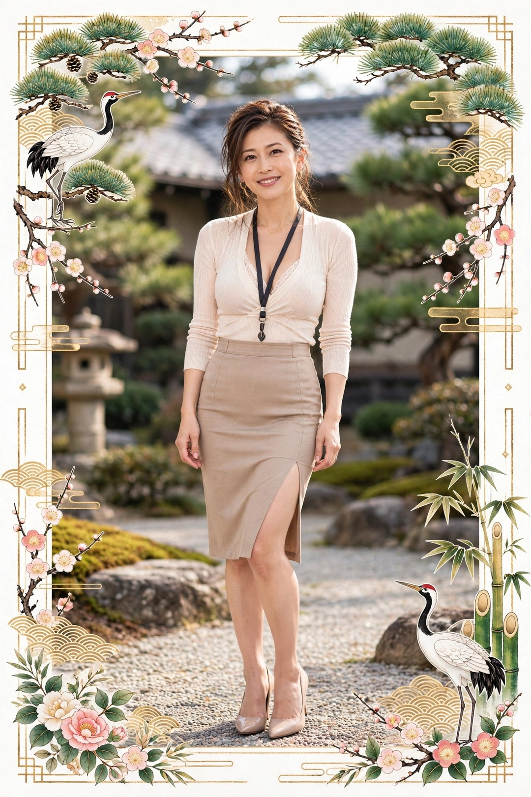
添付のキャラクターを、顔と髪型と形の特徴を保ったまま、次のスタイルに変身させてください。 スタイル：年賀状の写真面のような、松竹梅や鶴のおめでたい和のモチーフの枠の中の姿。文字は入れないでください 全身が1人だけ写る画像にしてください。別人化させないでください。 私のキャラクターの固定ポイント：見た目は〔 〕、髪型は〔 〕、服装は〔 〕
添付のキャラクターを、顔と髪型と形の特徴を保ったまま、次のスタイルに変身させてください。 スタイル：ツリーに吊るすオーナメント人形のような、金の紐で吊られた小さな立体飾り 全身が1人だけ写る画像にしてください。別人化させないでください。 私のキャラクターの固定ポイント：見た目は〔 〕、髪型は〔 〕、服装は〔 〕
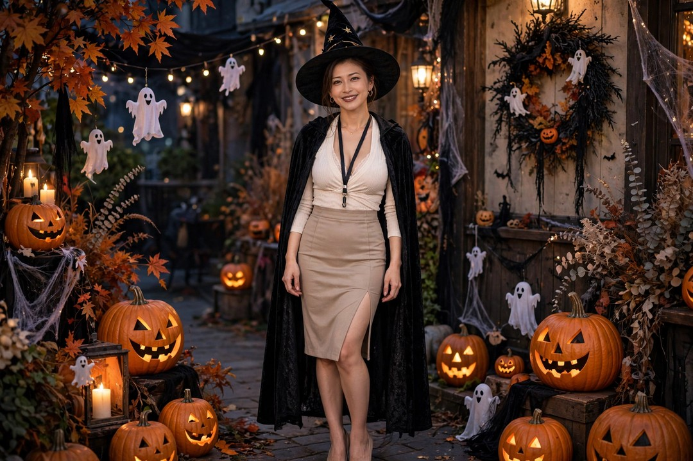
添付のキャラクターを、顔と髪型と形の特徴を保ったまま、次のスタイルに変身させてください。 スタイル：帽子やマントの小物で仮装した姿。顔と髪型は変えないでください 全身が1人だけ写る画像にしてください。別人化させないでください。 私のキャラクターの固定ポイント：見た目は〔 〕、髪型は〔 〕、服装は〔 〕
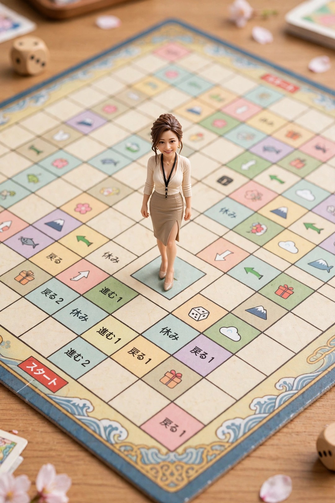
添付のキャラクターを、顔と髪型と形の特徴を保ったまま、次のスタイルに変身させてください。 スタイル：双六の盤面の上に立つコマのような小さな立体フィギュア 全身が1人だけ写る画像にしてください。別人化させないでください。 私のキャラクターの固定ポイント：見た目は〔 〕、髪型は〔 〕、服装は〔 〕
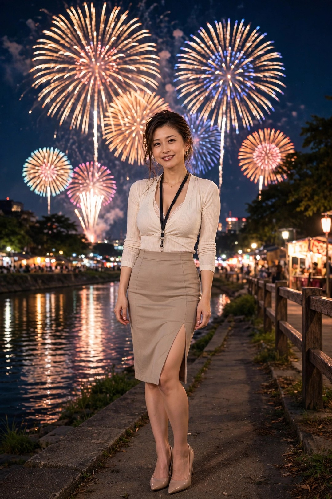
添付のキャラクターを、顔と髪型と形の特徴を保ったまま、次のスタイルに変身させてください。 スタイル：夜空に大輪の花火が上がる川辺の風景の中に立つ姿。文字は入れないでください 全身が1人だけ写る画像にしてください。別人化させないでください。 私のキャラクターの固定ポイント：見た目は〔 〕、髪型は〔 〕、服装は〔 〕
結果がずれたら、下の一文を足して送り直してください。
※生成結果の文字（看板・パッケージなど）は乱れることがあります。使う前に見直してください。
※実在のブランド名・商品名は、プロンプトにも画像内にも入れないでください。
※うまく出ないときは、そのまま公式LINEのトークに送ってください。